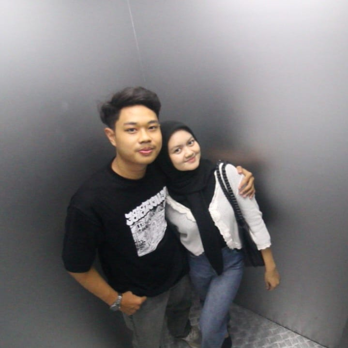
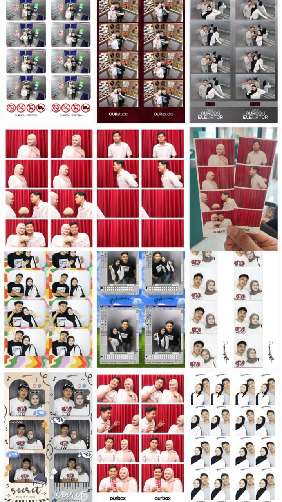
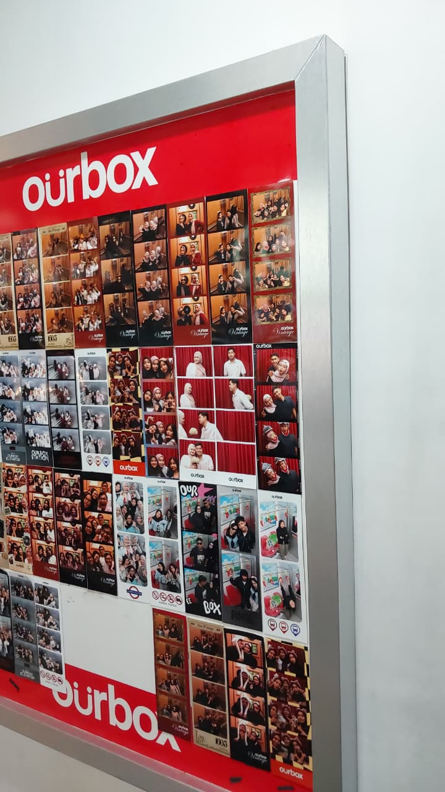
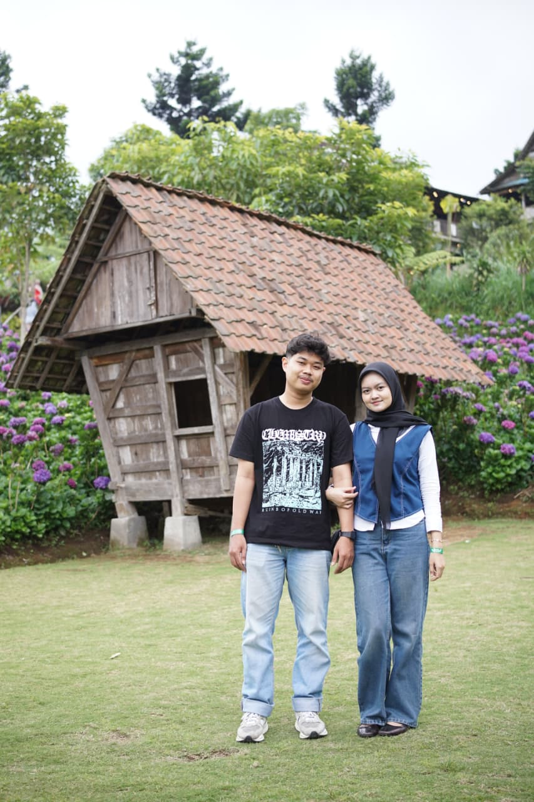
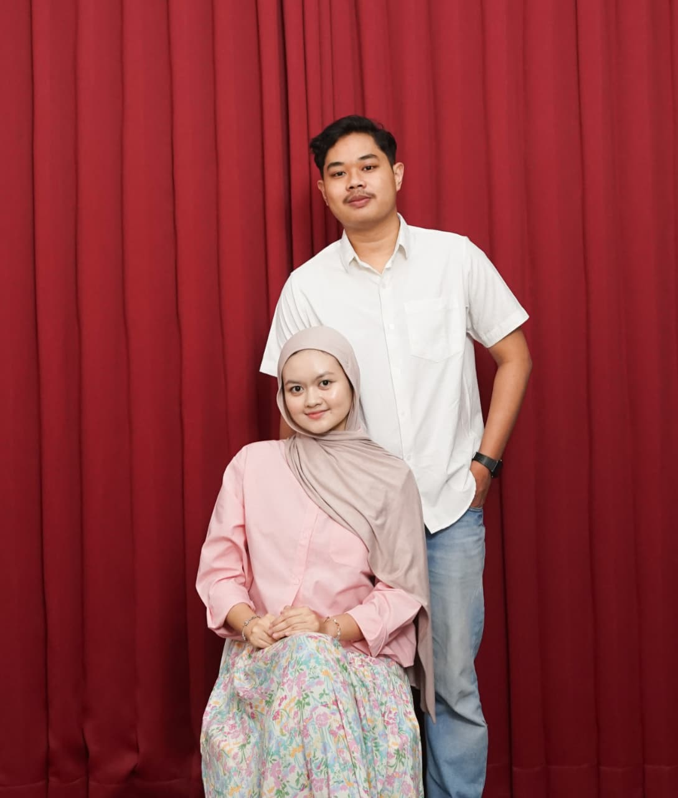

Our Memory Lane
Setiap detiknya berharga bersamamu

"Foto ini di ambil 21 juli 2024, tepat setelah 2 hari kami saling berjanji untuk menjalin hubungan asmara. Mungkin ada yang tanya, "Foto first datenya mana? Foto jadiannya mana?" yaaa... itulah kami, pada awal first date dan pas jadian pun kami tidak punya foto foto itu. kami memang di awal masih canggung untuk foto bersama hehe"

"Ini adalah foto date pertama kita setelah jadian, foto ini di ambil di salah satu studio photobooth di daerah Kayutangan Malang."

"Hampir tiap kita ketemu, pasti kita sempatkan untuk foto di photobooth. Mungkin mbak/mas penjaga photobooth udah hafal kali sama wajah kami hahaha. Eh, di web ini ada fitur photobooth juga loo, nanti kamu bisa cobain di menu paling bawah."

"Dan gongnya foto kita pernah terpampang di studio photobooth Ourbox Kayutangan Malang. Kata mas/mbak nya biar jadi reverensi foto, biar yang foto ga diem dieman lama di studio buat cari reverensi gaya aja haha"

"Kalo ini foto di Wisata Dusun Kuliner Batu Malang. Ini momen spesial juga bagi kami, kami pertama kali di foto pakai jasa foto profesional di sana. Bahkan sempet di kasi reverensi gaya ala ala preweding wkwk, sampe malu di liatin orang banyakk. GG si buat mbanya yang motoin kita kemarin"

"Nah, kalo ini foto studio pertama kita. Awalnya ga sengaja mampir ke sini, dulu kirain ini studio photobooth eh ternyata emang studio photo. Berhubung lagi hujan deres ga berhenti-henti akhirnya neduh deh di studionya. Eh sama penjaganya ditawarin buat foto disana, karena sebelunya kuota foto disana udah full. Tapi berhubung hujan akhirnya ada yang di cancel jadi kita bisa foto disana."